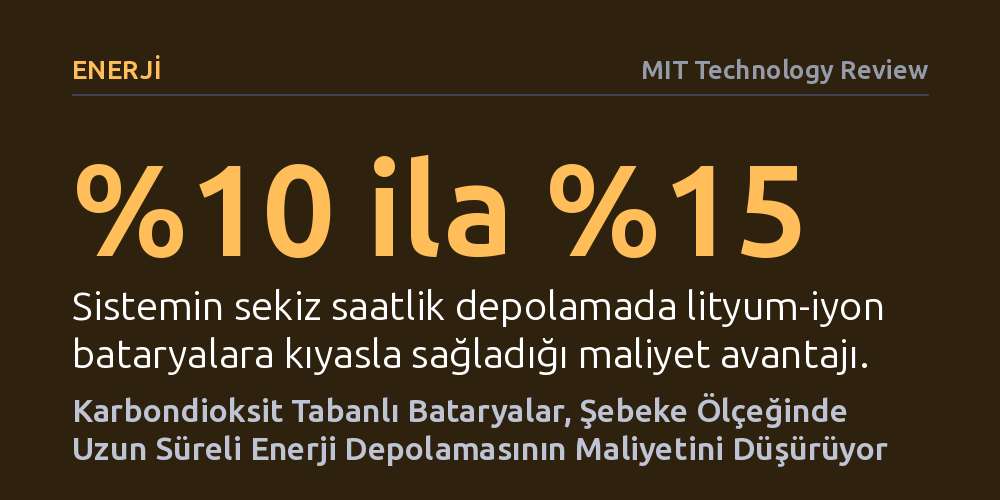

ENERJI · MIT Technology Review · 2026-10-07
İtalyan Energy Dome şirketi, karbondioksiti sıkıştırıp sıvılaştırarak 24 saate kadar şebeke ölçeğinde elektrik depolayan kapalı devre bataryalarını ticarileştirdi. Hazır endüstriyel parçalarla kurulan sistem, sekiz saat ve üzeri depolamada lityum-iyon pillerden en az yüzde 10 ila 15 daha ucuza mal oluyor.
Yenilenebilir enerjinin kesintili üretim sorununu çözmek için maden bağımlı lityum-iyon kimyasına muhtaç olunmadığını, standart sanayi ekipmanlarıyla da uzun süreli depolama yapılabileceğini gösteriyor.

Güneş ve karasal rüzgâr santralleri, kurulum hızı ve düşük maliyetleri sayesinde küresel elektrik şebekelerinin en hızlı büyüyen kaynakları haline geldi. Ancak hava koşullarına bağlı bu kaynakların üretimi kaçınılmaz olarak kesintili seyrediyor. Rüzgâr dindiğinde veya güneş battığında ortaya çıkan arz açığını kapatmak, temiz enerjiye geçişin önündeki en büyük engellerden biri olmaya devam ediyor.
Günümüzde şebeke dengelemesinde yaygın olarak kullanılan lityum-iyon bataryalar, dört saate kadar olan kısa süreli ihtiyaçlarda başarılı olsa da süreyi sekiz saate veya tam güne çıkarmak gerektiğinde ekonomik olmaktan çıkıyor. İtalyan girişimi Energy Dome, bu tıkanıklığı aşmak için devasa kubbelere doldurulan karbondioksit gazını mekanik bir bataryaya dönüştürerek 24 saate kadar kesintisiz güç sağlama iddiasıyla sahaya çıkıyor.
Tesisin kalbinde yaklaşık yedi futbol sahası büyüklüğünde bir alanı kaplayan ve içinde 2.000 ton karbondioksit barındıran dev bir kubbe bulunuyor. Bağlı bulunduğu güneş veya rüzgâr santralinden şebekeye fazla elektrik aktığı anlarda kompresörler devreye giriyor; kubbedeki gazı yüksek basınçla sıkıştırarak sıvı hale getiriyor ve karbon çeliğinden tanklarda depoluyor. Bu sıkışma sırasında ortaya çıkan yoğun ısı ise özel bir termal depolama malzemesinde hapsediliyor.
Şebekenin elektriğe ihtiyaç duyduğu anlarda süreç tersine işletiliyor. Tanklardaki sıvı karbondioksit, daha önce saklanan ısıyla temas ettirilerek hızla buharlaştırılıyor ve gaza dönüştürülüyor. Genleşen gaz yüksek basınçla bir türbini döndürerek elektrik üretiyor ve ardından döngüyü yeniden başlatmak üzere ilk kubbenin içine geri dönüyor. Tesis atmosferle gaz alışverişi yapmadan, tamamen kapalı bir devrede çalışıyor.
Lityum-iyon bataryalarda depolama süresini iki katına çıkarmak için hücre sayısını da iki katına çıkarmak gerekiyor. Energy Dome ise sekiz saatlik bir sistemde lityum-iyon bataryalara kıyasla yaklaşık yüzde 10 ila 15 daha ucuz bir maliyet sunuyor; depolama süresi 24 saate yaklaştıkça bu ekonomik makas daha da açılıyor. Gaz sıkıştırma yöntemi yeraltı mağaralarında hava depolayan eski yöntemlerin aksine belirli bir jeolojik yapıya da ihtiyaç duymuyor.
Bu ekonomik üstünlüğün arkasında egzotik malzemeler yerine piyasada halihazırda bulunan kompresör, türbin ve çelik tank gibi standart sanayi ekipmanlarının kullanılması yatıyor. Mevcut tedarik zincirinden yararlanıldığı için bir sözleşmenin imzalanmasından tesisin devreye alınmasına kadar geçen süre yalnızca iki yılı buluyor. Şirket, Sardinya'da 18.000 hanenin 10 saatlik ihtiyacını karşılayabilecek 200 megavat-saatlik ilk ticari tesisini işletmeye almış durumda.
Teknolojinin sunduğu ölçeklenebilirlik avantajına karşın bazı önemli teknik ve çevresel sınırlılıkları bulunuyor. Sistemin depoladığı enerjiyi şebekeye geri verme oranı, yani çevrim verimliliği yaklaşık yüzde 70 seviyesinde kalıyor. Bu oran yüzde 90 verimle çalışan lityum-iyon pillerin gerisinde olsa da yüzde 50 civarında kalan demir-hava bataryaları gibi diğer uzun süreli depolama seçeneklerine kıyasla rekabetçi kabul ediliyor.
Öte yandan şirketin sunduğu bazı modeller iklim hedefleri açısından çelişki barındırıyor. Verimliliği artırmak amacıyla karbondioksit bataryasını doğal gaz türbinlerinin atık ısısıyla birleştiren hibrit bir versiyon da pazarlanıyor; bu tasarım işletme verimini yükseltse de doğrudan fosil yakıt kaynaklı sera gazı salımına yol açıyor. Ayrıca şirketin beş kıtada planladığı 30 gigavat-saatlik devasa portföyü hayata geçirebilmesi için sahadaki tek ticari tesisin ötesinde kendini kanıtlaması gerekiyor.